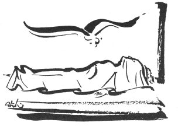

Ölülerde ağıt söylemek, Anadolu halkının başlıca adetlerinden biridir. Biz burada, bu adetin Çukurovada nasıl yapıldığını anlatmaya çalışacağız. Burada ağıtların tahliline girişmeyeceğiz. Yalnız bu adetin nasıl yapıldığını, içe inmeden, dış görünüşünü söyleyeceğiz.
Osmaniye kazasına bağlı Hemite, –eski adı Göğceli– Kadirli kazasına bağlı Bozkuyu, Cığçık, Azaplı, Harkaştığı, Nürfet ve Maraş'ın Andırın kazasına bağlı Gövahmetli köylerinde yaptığımız tetkikler, bu adet hakkında bildiklerimizi takviye etmiştir. Esasen bu muhitin çocuğu olduğumuz için, muhitimizdeki her adeti bilmemiz tabii görülmelidir.
1940'ta Osmaniyenin Hemite köyünde, 1941'de Kadirli kazasında gördüğüm ve not ettiğim, ölülerde ağıt söyleme merasimini olduğu gibi nakledeceğim. Pek yakından gördüğüm bu iki merasim arasında hiç fark yoktur. Yine bugünlerde yaptığım bazı tetkikler, Çukurovanın her tarafında bu adetin, aynı şekilde yapıldığını göstermektedir.
Ağıt, umumiyetle, ne şekilde söylenir? İlk olarak bunu görelim.
Hasta can çekişirken, hoca Kuranı yahut Yasini Şerifi yavaş yavaş okur. Hasta can çekişirken Kuran yahut Yasin okumak, hiç ihmal edilmeyen dini kaidelerdendir. Hasta can verdikten biraz sonra okumak işi biter ve hoca çekilir. Hoca gidince, ölünün üstündeki yorgan kadınlardan biri tarafından sökülür. Melefesi –yorganın içindeki beyaz bez– ölünün üzerinde bırakıldıktan sonra geri kalan tarafı alınır. Bu iş on dakika kadar sürer. Bu on dakika zarfında orada bulunan kadınlar, ölünün etrafında halka olurlar. –Bir köyde ölüm olduğu vakit, bunu duyanların hepsi, ölü evine toplanır.– Bu sırada, halka olmuş kadınların içinden biri kalkarak ölünün elbise ve çamaşırları bulunan bohçayı kadınlardan birinin önüne atar. Önüne bohça atılan kadın, bohçayı açar, içindeki eşyalardan birini eline alarak ağıt söylemeye başlar. Ağıdın bir beyiti söylenince, söyleyen ve öteki kadınlar, hep birden ağlamağa başlarlar. Bu ağlamak, bazen de kıta sonlarında olur. O kadının uydurduğu besteye bakar.
Artık her beyit söylendikçe arkasından ağlanır. Birinci kadın yorulunca, diğer bir kadın bohçadan bir eşya alarak söylemeye başlar. Böylece söylemek isteyen kadınlar söyler ve ağlarlar. Bu söyleyiş, iki kadın arasında karşılıklı da yapılabilir. Kitabımızda buna misal vardır.
Kadınlar, yorgunluk duyunca içlerinden biri bohçayı dürer ve sükunet içinde yerlerinden ayrılırlar. Ölü de yıkanmak için kaldırılır.
Bazı yerlerde, mesela Vanda, Erzurumda, Burdurda ölü mezara götürülürken arkasından erkeklerin de ağıt söylediklerini öğrendik. Hemite köyünden 95 yaşında Hava Hatunun söylediğine göre, eskiden Çukurovada da erkekler bu merasimi aynı şekilde yaparlarmış. Şimdi buna tesadüf edilmiyor.
Ağıt, bu anlattığımız umumi söyleniş şeklinden başka şekillerle de söylenebiliyor. Bunları da teker teker görebiliriz:
l- Ölünün, başka köyde bulunan tanıdıkları baş sağlığı için geldikleri zaman, yukarda anlattığımız gibi bohça öne atılır ve aynı şekilde ağıt söylenir.
2- Bir insan, öleceğini bilirse, ölmeden evvel kendisi için ağıt yakabilir.
3- Zengin ölü sahipleri para vererek, tanınmış halk şairlerine ağıt yaktırırlar. Kitabımızda buna da misal vardır. Âşık Hüseyinin, Hatca Gelinin ağıdı.
4- Uzakta, öldüğü duyulan bir büyük, bir akraba, bir tanıdık için de ağıt yakılır. Kitabımızda misal vardır.
1.11.1942 Kadirli
K.S.G.